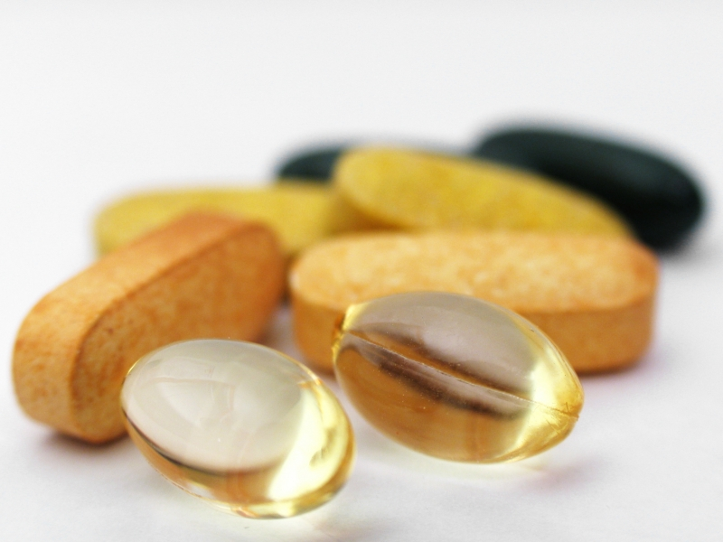

Sale
Heres our top popular products people are known to purchase. We not only sale common supplements but only specfic kind others have recently purchased in the past. In order for you to be served well we depend upon our customers purchases. What makes this company stand out is being more dedicated to our customers. Other places buy prducts their not sure the customers would like or if it's even good. Green Thumb doesn't. Our team put together a list of the best products based off recents purchases and also have accept special requests for merchandise we don't have in stock.